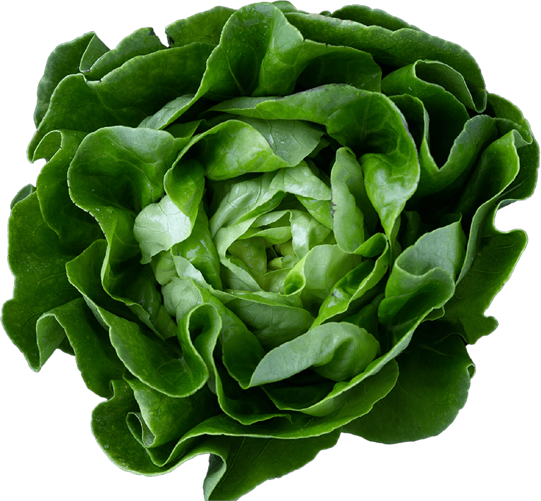
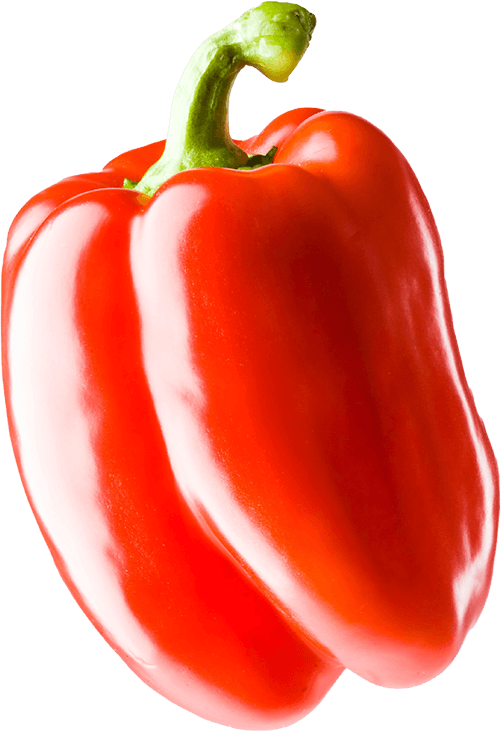

Pousse pousse pousse
Les bons gros légumes
Des beaux légumes pour tout l'monde
Chanson - 5 minutes
Des navets puis des laitues. Des oignons puis des concombres. Et puis des choux-fleurs. Des beaux légumes pour tout l'monde. Du maïs puis des carottes. Des tomates puis des poireaux.
Des beaux légumes pour tout l’monde
Des navets puis des laitues. Des oignons puis des concombres. Et puis des choux-fleurs. Des beaux légumes pour tout l'monde.
Nouvelles - 5 minutes
Des beaux légumes pour tout l’monde
Des navets puis des laitues. Des oignons puis des concombres. Et puis des choux-fleurs. Des beaux légumes pour tout l'monde.
Nouvelles - 5 minutes
Je suis une laitue tue, tue
J'veux être mangée.
J'ai bien hâte qu'on vienne me
récolter.
Des beaux légumes pour tout l’monde
Des navets puis des laitues. Des oignons puis des concombres.
Nouvelles - 5 minutes
Des beaux légumes pour tout l’monde
Des navets puis des laitues. Des oignons puis des concombres.
Nouvelles - 5 minutes
« Miam, miam, miam les beaux gros légumes . Miam, miam, miam j'ai hâte d'en manger »
Un beau mur de légumes
Des navets puis des laitues. Des oignons puis des concombres. Et puis des choux-fleurs. Des beaux légumes pour tout l'monde.
Une belle laitue
De belles patates

Une belle laitue
Une beau poivron
Une belle aubergine
.png)
Une belle laitue
De belles patates